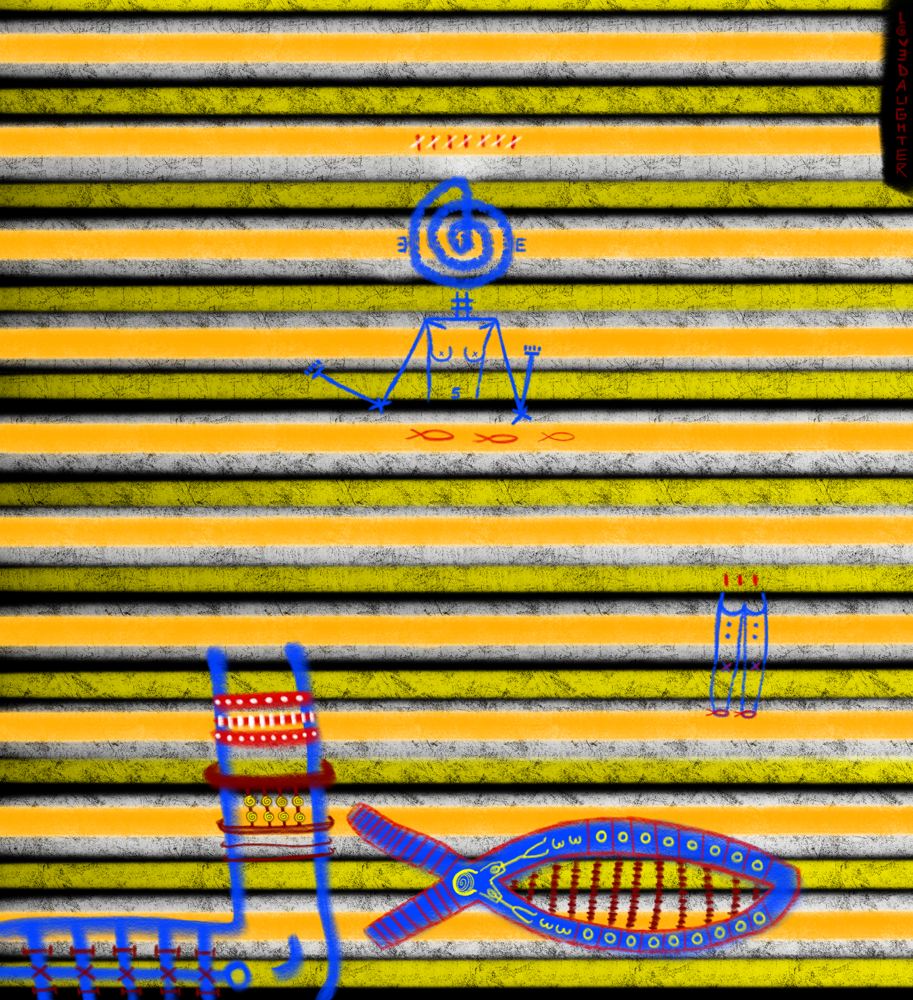
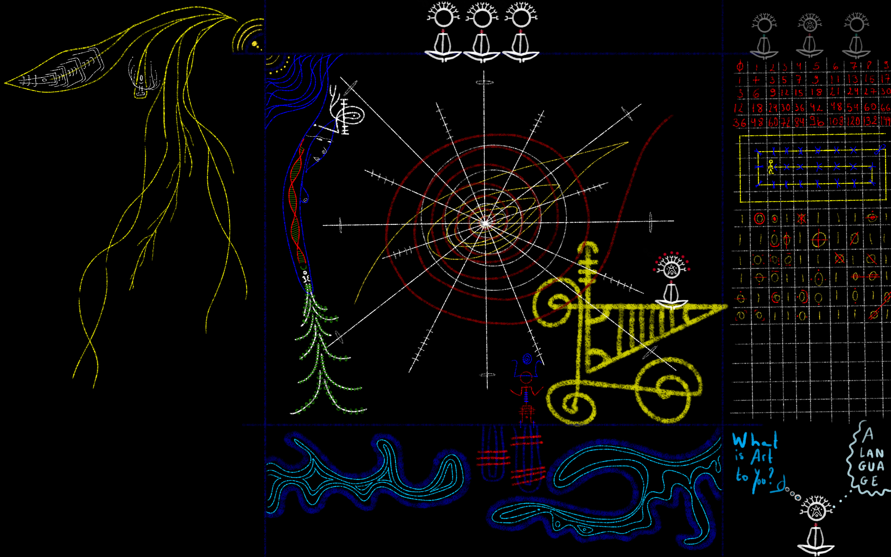
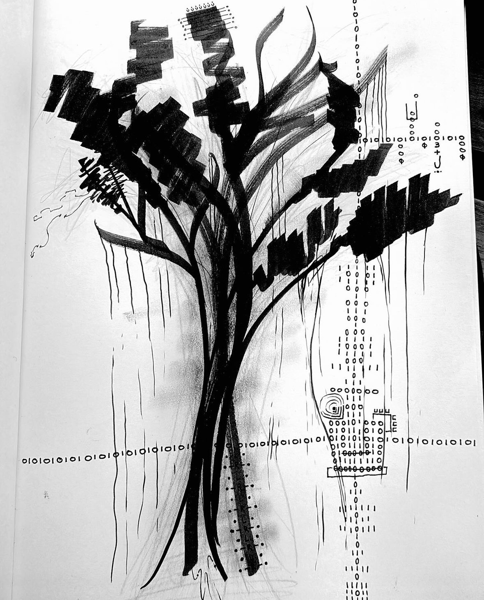
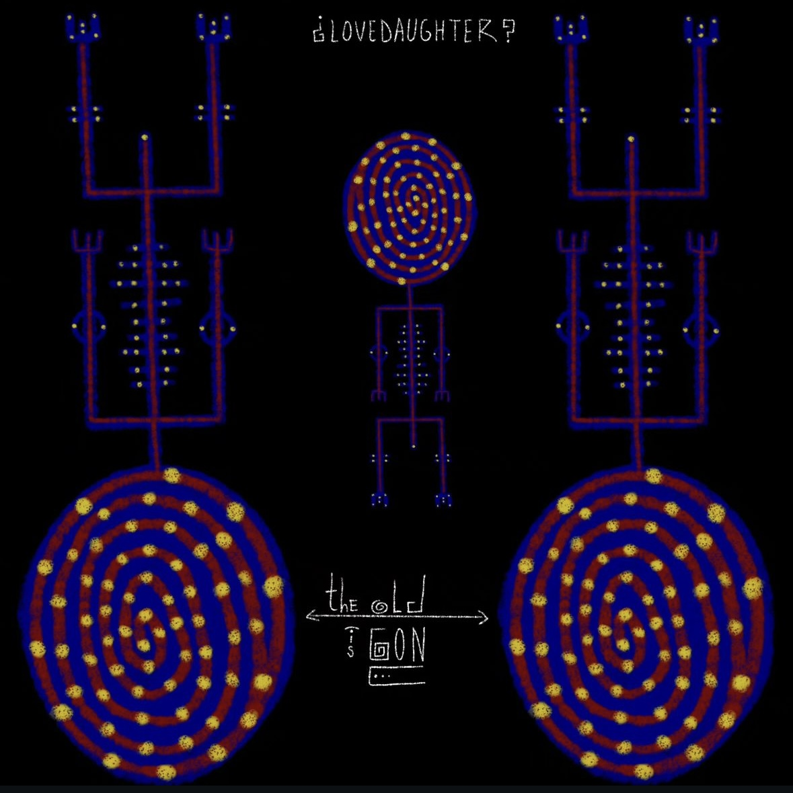

art




Que dire..
Moi qui préférais les poèmes aux couleurs..
Mes lèvres ont prit poussières
Mon pinceau sera le seul à porter ce fardeau.
Pourtant la parole est à mes côtés.
Quand je dors elle ne fait que me regarder.
Attendant le jour où je déciderai d'abandonner.
Mon besoin d'être comblé.
Je me suis réfugié dans le dessin
Mais les mots m'ont suivi
Je pense qu'ils ne m'ont pas compris
Je cherche à être comprise
Et non être mépris
Qu'est-ce que ces symboles ?
Ah je vois vous tenez absolument à parler.
Peu importe la langue.
Dans mes mouvements les mots sont libéré.
Dans ma voix ils sont formé.
Dans mes mains ils sont dessiné.
Dans ma tête ils sont hébergé.
Ils sont partout.
Car c'est eux qui m'ont formé.
Peu importe où je cours.
Ils me passeront le bonjour.